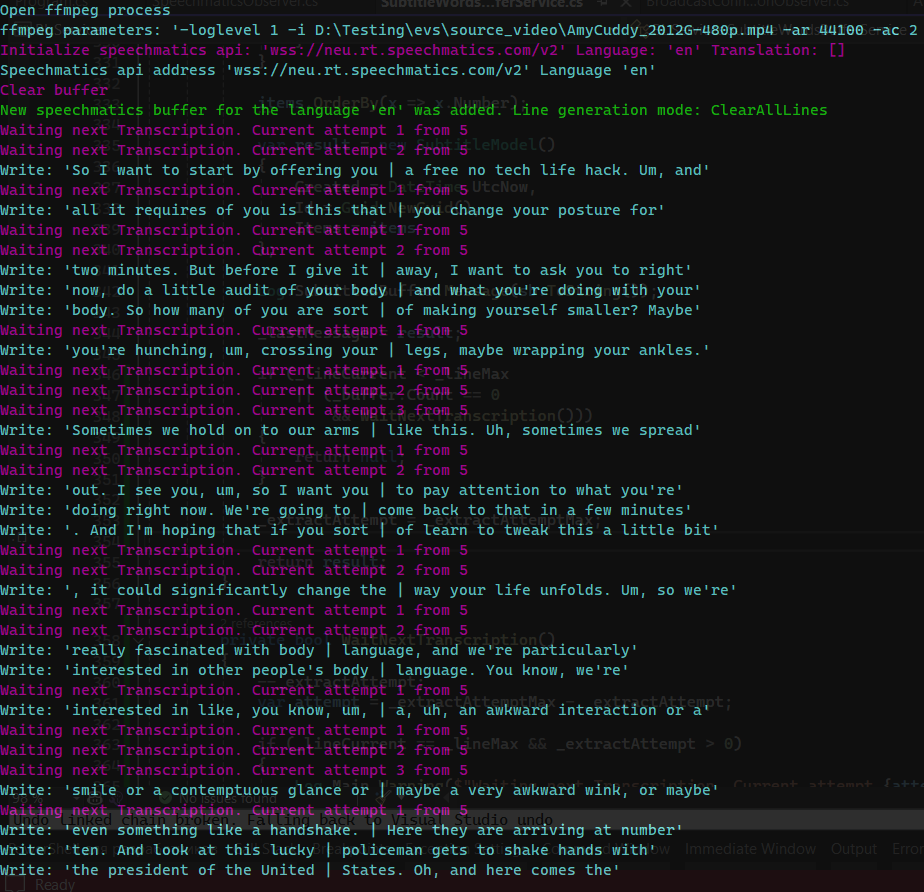

stl version v3.8.3.0
Date: 2024.07.31
Issues in Milestone
---
- [16] #autosub Add the ability to combine multiple modes "subtitle_write_mode"
- [17] #autosub Wait some iterations to fill subtitle lines if there are not fully completed
Features
---
#autosub Add the ability to combine multiple modes "subtitle_write_mode"
Changed `subtitle_write_mode` settings in file `ApplicationSettings.json` from single value to array
Example:
{
"grpc_service_ip": "127.0.0.1",
"grpc_service_port": 9740,
"subtitles_timeout_ms": 2000,
"subtitle_lines": "8,14",
"subtitle_start_mode": 1,
"subtitle_write_mode": [ 0, 1, 2 ], // <--- Changed to Array
"subtitle_srt_path": "./tmp/subtitle.srt",
"subtitle_latest_path": "./tmp/latest.sub",
"subtitle_gen_line_mode": 0
}
Now can be activated all modes
- Send via TCP or UDP as Newfor
- Write to SRT file
- Write latest subtitle to a file as simple text

#autosub Wait some iterations to fill subtitle lines if there are not fully completed
The problem is that when receiving a subtitle - the line may not be completely filled yet.
Thus, we get a duplicate subtitle.
For example:
- ...
- So I want to start by offering you | a free no tech life hack
- So I want to start by offering you | a free no tech life hack, and all
- ...
To avoid such a situation and not to lose the last subtitle when the transcription stops coming, we add a new parameter `subtitle_extract_attempts` to the settings file `ApplicationSettings.json`, which specifies the number of iterations that will wait for the Transcription to come in before giving an incompletely formed subtitle. One iteration is specified milliseconds in `subtitles_timeout_ms`.
